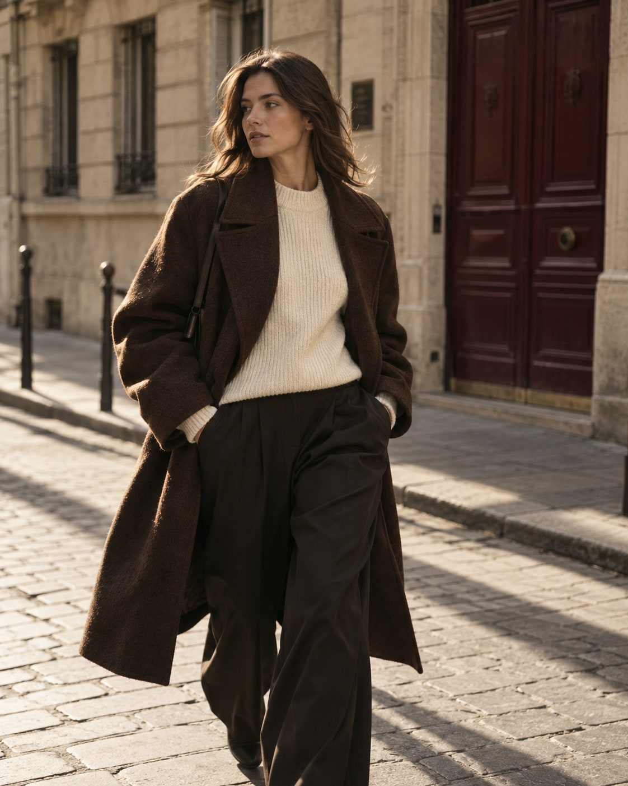
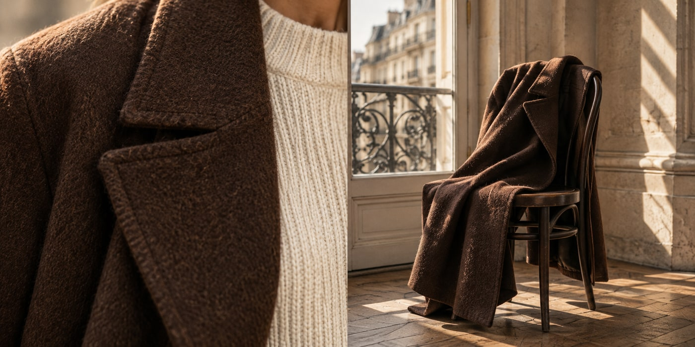
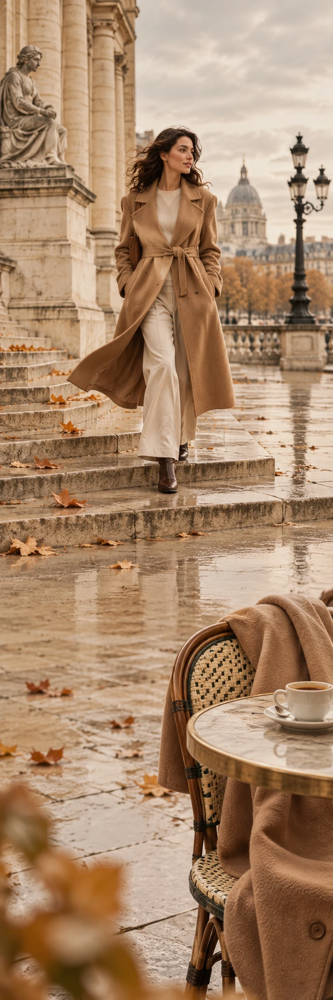

Make yourself
at home.
Ontdek Maison Rue ↗EEN EERSTE KENNISMAKING
Stukken die blijven.
Op jouw manier.
Fijn dat je er bent. Ontdek onze wereld van warme lagen, rustige kleuren en kleine details. Kijk rustig rond.

Van dichtbij nog mooier.
Een jas. Jouw verhaal.
